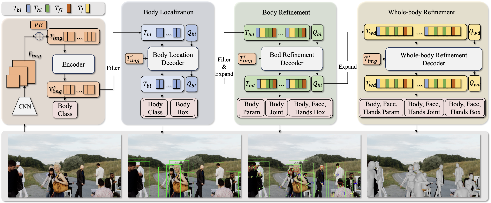
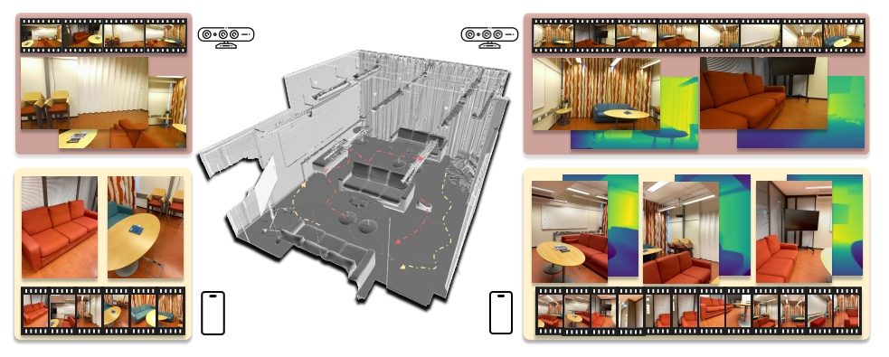
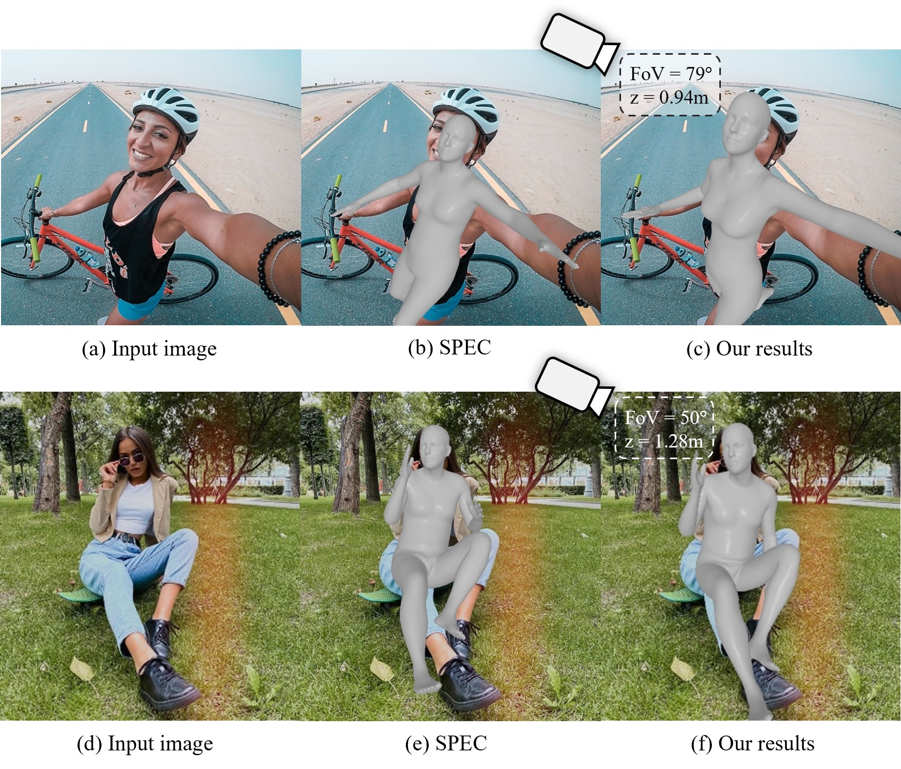
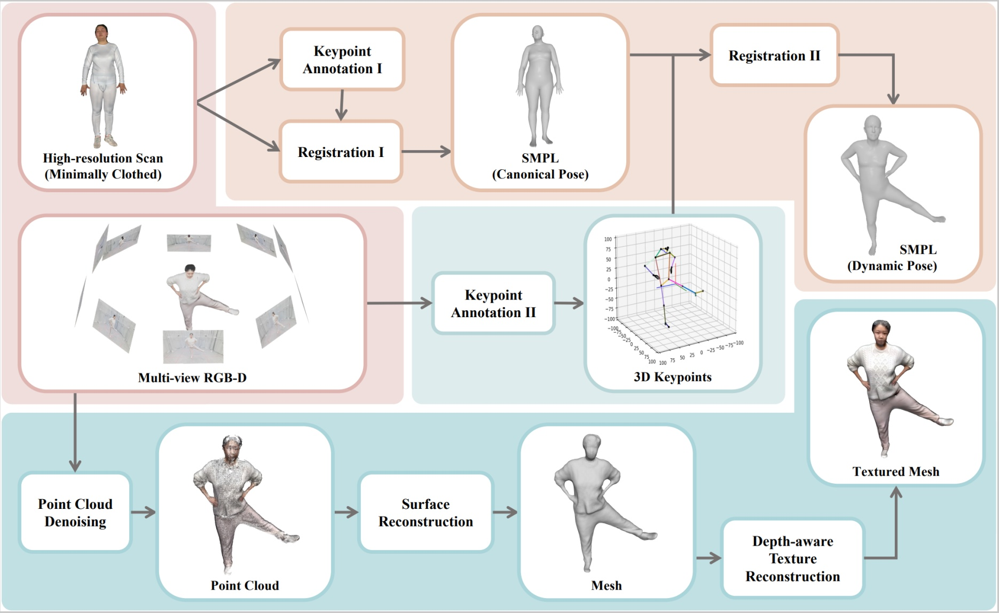

@inproceedings{ren2023mushroom,title={MuSHRoom: Multi-Sensor Hybrid Room Dataset for Joint 3D
Reconstruction and Novel View Synthesis},booktitle={Winter Conference on Applications of Computer Vision (WACV)},author={Xuqian Ren, Wenjia Wang, Dingding Cai, Tuuli Tuominen,
Juho Kannala, Esa Rahtu},year={2024}}

AiOS: All-in-One-Stage Expressive Human Pose and Shape
Estimation.
Qingping Sun, Yanjun Wang, Ailing Zeng, Wanqi Yin, Chen Wei,
Wenjia Wang, Haiyi
Mei, Chi Sing
Leung, Ziwei Liu, Lei Yang, Zhongang Cai.
@inproceedings{ge2024humanwild,title={3D Human Reconstruction in the Wild with Synthetic Data Using Generative Models},booktitle={arXiv.org},author={Ge, Yongtao and Wang, Wenjia and Chen, Yongfan and Chen, Hao and Shen, Chunhua},year={2024}}
2023

MuSHRoom: Multi-Sensor Hybrid Room Dataset for Joint 3D
Reconstruction and Novel View Synthesis.
Xuqian Ren,
Wenjia Wang, Dingding
Cai, Tuuli
Tuominen,
Juho Kannala, Esa Rahtu
Winter Conference on Applications of Computer Vision
2024 (WACV 2024)
@inproceedings{ren2023mushroom,title={MuSHRoom: Multi-Sensor Hybrid Room Dataset for Joint 3D
Reconstruction and Novel View Synthesis},booktitle={Winter Conference on Applications of Computer Vision (WACV)},author={Xuqian Ren, Wenjia Wang, Dingding Cai, Tuuli Tuominen,
Juho Kannala, Esa Rahtu},year={2024}}

Zolly: Zoom Focal Length Correctly for Perspective-Distorted
Human Mesh
Reconstruction.
@inproceedings{wang2023zolly,title={Zolly: Zoom Focal Length Correctly for Perspective-Distorted Human Mesh Reconstruction},booktitle={Proc. of the IEEE International Conf. on Computer Vision (ICCV Oral)},author={Wang, Wenjia and Ge, Yongtao and Mei, Haiyi and Cai, Zhongang and Sun, Qingping and Wang, Yanjun and Shen, Chunhua and Yang, Lei and Taku, Komura},year={2023}}
2022

HuMMan: Multi-Modal 4D Human Dataset for Versatile Sensing
and Modeling.
@inproceedings{cai2022humman,title={Humman: Multi-modal 4d human dataset for versatile sensing and modeling},booktitle={European Conference on Computer Vision (ECCV Oral)},author={Cai, Zhongang and Ren, Daxuan and Zeng, Ailing and Lin, Zhengyu and Yu, Tao and Wang, Wenjia and Fan, Xiangyu and Gao, Yang and Yu, Yifan and Pan, Liang and others},year={2022}}
2021
Segmenting transparent object in the wild with transformer.
Enze Xie, Wenjia Wang, Wenhai Wang,
Peize Sun, Hang Xu, Ding Liang, Ping
Luo
International Joint Conferences on Artificial Intelligence 2021 (IJCAI
2021)